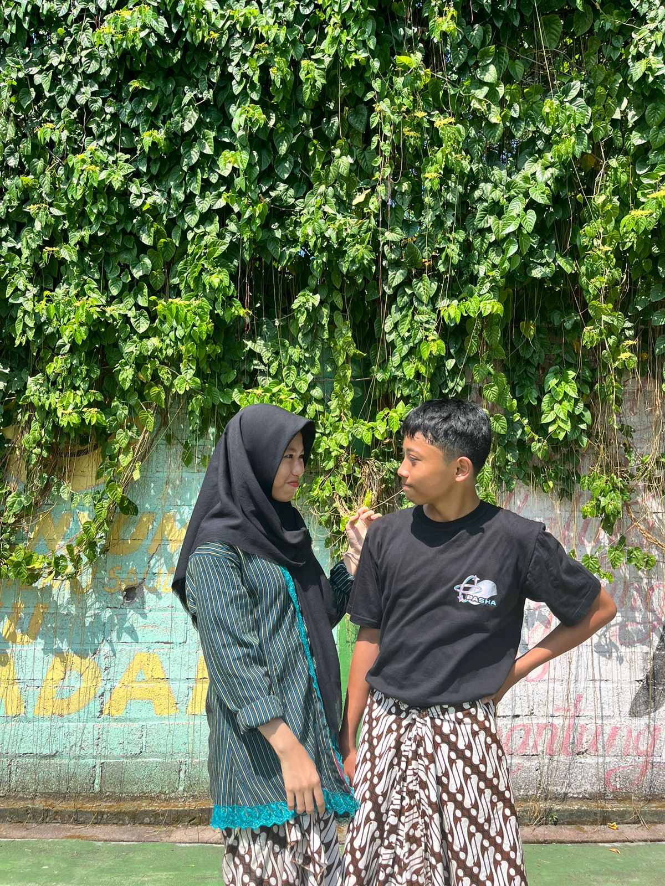

aku minta maafff bangettt samaa kamuu garaa garaa kesalahan yang terus terusann aku ulangin dan udah bikin kamuu sedih atau marah akhir akhir ini bahkann darii awall kitaa pacarann duluu. akuu juga ndaa bermaksud sedikitpunn buat nyakitin hati kamu bahkan kata kata aku yang jelas jelas ngebuat hati kamu hancur. aku juga minta maaf bangett karna selamaa inii perann akuu kurangg buatt kamuu. tolong maafinnn akuuu yaaa, sebenernyaa akuu jugaa masii sayangg samaa kamuu,akuu gamauu jauhh darii kamuu.aku janji bakal jadi lebihh baikk dari sebelumnyaa dan sekarangg akuu jugaa masii berusahaa maaff yahh selamaa inii akuu gadaa action😔.
yeeay! makasihh yapss sofie gemass tersayangg udah mauu maafinnn akuu. akuu benerr benerr berusahaa jadii sepertii yangg kamuu pengeninn. maaff yahh alayy bangett🥰🌹